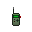
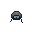
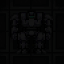

Guide to Robotics
Are you a Roboticist? This guide will explain the creation and maintenance of Cyborgs, bots, and stocky exosuits.
Exosuit Fabricators
These are the main machines used in Robotics, with them you can create various exosuit and cyborg parts and their upgrade modules. Remember to sync these with the R&D servers frequently for new equipment designs and increased production speeds.
If one (or more) of the Exosuit Fabricators gets stuck at updating from R&D servers, use a screwdriver on it and then crowbar that fucker! Remove any metal/glass sheets and then put all the components back into the machine frame, use a screwdriver at the end to reassemble the Exosuit Fabricator.
 Cyborgs
Cyborgs
| Requires |
|---|
| 1 x each Cyborg part (made with the Exosuit Fabricator) 2 x |
The Cyborg is the Roboticist's primary creation. They are tasked with helping the station's inhabitants in their daily life and trying to kill everyone when the AI is insane. Each cyborg is required to follow the AI's laws, and may choose one of the AIs in the event that more than one exists.
Assuming you already have the necessary components:
 Insert a charged power cell into the cyborg's chest
Insert a charged power cell into the cyborg's chest Insert a coil of wire into the cyborg's chest
Insert a coil of wire into the cyborg's chest Insert two flashes in the cyborg's head (one for each eye socket)
Insert two flashes in the cyborg's head (one for each eye socket)- For final assembly, take each component and apply it to the cyborg endoskeleton
 Multitools can be used to give cyborgs names. Simply apply the multitool before the brain is installed. Note that calling a borg 'PenisShitter 5000' will not net you any new friends, however, if your borg leaves the name up to you, be sure to name it 'PenisShitter 5000'. For some hilarity and general confusion, try giving the borg the same name as the AI.
Multitools can be used to give cyborgs names. Simply apply the multitool before the brain is installed. Note that calling a borg 'PenisShitter 5000' will not net you any new friends, however, if your borg leaves the name up to you, be sure to name it 'PenisShitter 5000'. For some hilarity and general confusion, try giving the borg the same name as the AI.- Once it's complete, it's time for the brain. See here how to remove your volunteer's brain. (If the brain has been removed from the head without surgery, you will need to pour mannitol on it to fix it)
- Now put the brain into your MMI, and then the MMI into the cyborg suit. Congratulations, your cyborg is complete. Put the brainless corpse into a body bag and deliver it to the Morgue (or throw it down the disposals because ROBOTICS!). If when you insert the MMI into the cyborg it says "This MMI does not seem to fit." it means the user is job banned from cyborg.
- Instead of a brain, you can insert a positronic brain (controlled by a ghost) or B.O.R.I.S. module (controlled by the AI) into the cyborg as well.
Cyborg Maintenance
In the beginning of a maintenance process, you need to open the Cyborg's maintenance cover. To open it:
 Use an ID Card, Emag it or just ask the Cyborg to unlock its panel
Use an ID Card, Emag it or just ask the Cyborg to unlock its panel Use a Crowbar to open the cover.
Use a Crowbar to open the cover.
After the maintenance process use the same tools in reverse order so the Cyborg doesn't run around with its cover open, like so:
- Use a Crowbar to close the cover.
- Use your ID Card to lock the Cyborg. Borgs can't lock their panel.
Cyborg Repairs
Cyborgs will often come to you for repairs if damaged.
For brute damage:
 Weld them to fix the dents.
Weld them to fix the dents.
For burn damage:
- Unlock and open the Cyborg's cover.
 Use an Empty Hand to remove the battery.
Use an Empty Hand to remove the battery. Screwdriver to expose wiring.
Screwdriver to expose wiring.- Rewire the damaged circuits. You may have to do this step more than once.
- Screwdriver to hide wiring.
- Re-insert the old battery or insert a new one.
- Close the cover and lock the Cyborg.
Engineering cyborgs can repair dents on themselves and on their fellow cyborgs. They cannot repair burn damage though, since they cannot remove power cells to reach the wiring.
Cyborg Batteries
You will often see at least one Cyborg come to your assembly line to ask for an upgrade.
- Unlock and open the Cyborg's cover.
- With an Empty Hand, remove the old battery.
- Insert a New Battery.
- Close the cover and lock the Cyborg.
Cyborg Radios
Cyborgs can be installed with radio encryption keys, allowing them to communicate on secure department channels.
- Unlock and open the Cyborg's cover.
- Insert a New Encryption Key (or Screwdriver to remove the current Key).
- Close the cover and lock the Cyborg.
Reviving Cyborgs
A cyborg that has failed but not been turned into scrap can be repaired back to working order.
- Create an Emergency Restart Module at the Exosuit Fabricator (under Cyborg Upgrade Modules).
- Repair the Cyborg with a welder and/or replace wires.
- Unlock and open the Cyborg's cover.
 Insert the Emergency Restart Module.
Insert the Emergency Restart Module.- Close the cover and lock the Cyborg.
Upgrading Cyborgs
- Unlock and open the Cyborg's cover.
- Insert the Upgrade Module (or emag to subvert).
- Close the cover and lock the Cyborg.
Resetting Cyborg models
For info on how to reset a cyborg's model, check out the Guide to Hacking.
Deconstructing Cyborgs
Cyborgs can be deconstructed to remove their MMI and get their parts back.
- Unlock and open the Cyborg's cover.
- Use an Empty Hand to remove battery.
- Screwdriver to open wiring.
 Cut every wire until the lockdown light turns on.
Cut every wire until the lockdown light turns on. Wrench to disassemble.
Wrench to disassemble.
(Alternatively, for steps 4 and 5, you can use a Robotics console)
Upgrades
Roboticists can construct upgrade modules for cyborgs, such as one that increases your movement speed. Should you wish to change models, ask the roboticist to cut and mend your reset wire.
| Name | Description | Materials to produce (unupgraded fabricator) |
|---|---|---|
| Cyborg Reclassification Module | Allows you to rename the borg. Use it in hand to set the name, then apply it to the cyborg. | 35000 Metal |
| Cyborg Emergency Restart Module | Used to force a restart of a disabled-but-repaired borg, bringing it back online. An important module! This will allow you to bring a dead, but not blown, Cyborg back to life. |
60000 Metal, 5000 Glass |
| Borg Expander | A cyborg resizer, it makes a cyborg huge. | 200000 metal, 5000 titanium |
| Cyborg Ion Thrusters Module | An ion-powered thruster system that works like a jetpack for movement in no gravity. | 80000 Metal, 6000 Glass, 6000 Uranium |
| Cyborg Self-Repair Module | Allows the cyborg to slowly repair iteself over time, increasing power consumption. | 15000 Metal, 15000 Glass |
| Illegal Equipment Modules | Enables illegal modules, the same that are enabled when cyborgs are emagged. Only obtainable through admin shenanigans or through researching illegal tech. (deconstruct Syndicate Items!) |
10000 Metal, 15000 Glass, 10000 Diamond |
| Engineering Cyborg RPED | A rapid part exchange device for the engineering cyborg. | 10000 metal, 5000 glass |
| Cyborg Diamond Drill | Upgrades a mining cyborg's drill to be faster. | 10000 Metal, 2000 Diamond |
| Cyborg Ore Satchel of Holding | Upgrades a mining cyborg's satchel to hold infinite minerals. | 10000 Metal, 250 Gold, 500 Uranium |
| Cyborg Lava-proof Tracks | Allows a mining cyborg to walk over lava undamaged. | 8000 Metal, 10000 Plasma |
| Medical Cyborg Crew Pinpointer | A crew pinpointer module for the medical cyborg. Also gives access to a crew monitor screen | 15000 Metal, 500 Glass |
| Medical Cyborg Expanded Hypospray | Adds Oculine, Inacusiate, Mutadone, Mannitol, Salicylic Acid, Oxandrolone, Rezadone, Pentetic Acid, and Haloperidol to a Medical Cyborg's hypospray chemicals. | 15000 Metal, 15000 Glass, 5000 Plasma |
| Cyborg Piercing Hypospray | Allows cyborg hyposprays to pierce through thick clothing and hardsuits. | 15000 Metal, 15000 Glass, 10000 Titanium, 5000 Diamond |
| Medical Cyborg Defibrillator | Gives a Medical Cyborg a defibrillator. | 15000 Metal, 15000 Glass, 10000 Silver, 10000 Gold, 5000 Titanium, 5000 Diamond |
| Medical Cyborg Surgical Processor | Gives a Medical Cyborg a Surgical Processor, which can be used on an operating computer to permanently learn any advanced surgeries that were synched on it. These surgeries can then be performed by the cyborg anywhere. | 5000 Metal, 4000 Glass, 4000 Silver |
| Rapid Disabler Cooling Module | Increases the recharge rate of security cyborg disablers. ( |
80000 metal, 6000 glass, 2000 gold, 500 diamond |
Mining Cyborgs can also have their KA upgraded with kinetic accelerator upgrades.
IPC Maintenance
You don't only deal with fixing Cyborgs as a roboticist. You also have to fix up any dead/damaged IPCs. Chances are some random Paramedic dragged them all to Medbay, so yell at them that they can't do anything with IPCs. Consider keeping a toolbox near your operating table. Also note that the brain of an IPC is stored in their chest.
Standard Repair
To fix an IPC you need:
- A welder - for brute damage
- Some cable coils - for burn damage
If you have the required tools which are mentioned above (remember to turn on your welder before you use it, as well as use eyewear such as welding goggles), simply use them on every damaged body part until they are fixed. A dead IPC should reboot itself when their damage is fixed, just keep applying the welder or cable coil until it says that part is in good condition then move onto the next limb on their body (so please don't try to defibrillate or anything, be patient).
Repair Surgery
If you are low on welding fuel or don't have cable readily available, you can surgically repair IPCs. Works at a slower rate through clothing.
 Target: chest
Target: chest
| Procedure | Ghetto Analogues |
| Step 1: |
|
| Step 2: | |
| Step 3: | |
| Step 4: |
Organ Replacement
On the event that an IPC suffers organ damage or loses an organ, you may have to replace it, IPC organs can be printed in the IPC components section of your fabricator once IPC parts have been researched, IPCs share their surgery steps with those of Augmented limbs
 Target: Head, chest, groin, arms
Target: Head, chest, groin, arms
| Procedure | Ghetto Analogues |
| Step 1: |
|
| Step 2: | |
| Step 3: |
|
| Step 4: |
|
| Step 5: |
|
| Step 6: |
|
| Step 7: |
Viral Contamination
Virus with the symptom of Biometallic Replication may infect IPCs, in order to cure them you use one of the three tiers of AntiVirus printable at the medical lathe
Brain Damage and Toxins
In the case an IPC suffers from toxin or brain damage/traumas one needs to apply Liquid Solder or System Cleaner respectively, applied via syringe.
Surgery
To initiate most surgeries, first place  Scalpel or the
Scalpel or the  Hemostat over the part of the body you are operating on.
Hemostat over the part of the body you are operating on.
Removing Brains
| Procedure | Ghetto Analogues |
| Step 1: |
|
| Step 2: |
|
| Step 3: |
(65%) |
| Step 4: |
|
| Step 5: |
|
| Step 6: |
|
| Step 7: Have an MMI in hand. | |
| Step 8: Click to remove the brain. |
Despite what some old-timer Roboticists may tell you, DO NOT JUST TAKE THE BONESAW AND CUT THEIR HEAD OFF WITHOUT SURGERY. Removing a brain without surgery will damage it and may result in the immediate death of the brain.
In case this happens, you will need to ask the Chemist to make some Mannitol to fix it. Once you have a beaker of it, just splash it on the brain and it should be good to go. You can always examine the brain to see if it is still damaged.
If a head is not attached to a body, you can simply use a  scalpel or some other slicing/cutting item on it to cut the brain out. No need for drapes or table.
scalpel or some other slicing/cutting item on it to cut the brain out. No need for drapes or table.
Limb Augmentation
Replace a limb with a robot part. The head, torso, arms, and legs can all be augmented. Augmenting torso makes you immune to appendicitis and xeno larva.
Robot limbs are tougher. They need welding to "heal" brute damage and wires for burn damage, and cannot be otherwise healed. EMP pulses will hurt augmented humans.
We can rebuild him. We have the technology.
 Target: Head, chest, legs or arms
Target: Head, chest, legs or arms
Bots
As a Roboticist, you serve another important purpose: making robots. Robots can benefit the station in many ways, and are really damned easy to create. The current list of robots, and how to make them, is as follows:
Remember: All bots can be made through the crafting menu (T-like hammer hud-icon). This can save a lot of time during construction, especially if Robotics is busy!
Medibot
Performs a baby version of tend wounds, except it can heal all 4 basic damage types. The surgery works through clothes and without the patient having to lie down. Amount healed scales with tend wounds surgeries researched. Each researched upgrade of tend wounds increases health healed by 50%. Requires a "refresh" similarly to operating computers to benefit from research. Medibots heal more of a specific damage if the medkit used to make them was oriented around that damage (a tox medkit medibot will heal toxin better).
When emagged it will inject 5u chloral hydrate and damage you based on what they would have healed (brute if you don't need treatment) per step.
To manufacture:
| Requires |
|---|
| 1 x Borg Right Arm |
- Attach the Borg Arm (left or right, doesn't matter) to an empty Med-kit. Color of the Med-kit doesn't matter, although it will affect the colour of the Medbot.
- You can pick the assembly up in your hand at this point and name it something clever/funny/stupid by holding your Pen in the other hand and clicking on it, if you wish.
- Add a Medical Analyzer.
- Insert the Proximity Sensor and your Medibot is ready!
Cleanbot
Cleanbots are great, as they serve the exact same purpose as the Janitor. What makes it even better is that it uses Space Cleaner to mop, so no slipping on everything! When Emagged (or hacked) it will spew slippery foam and melt people with acid.
To make:
| Requires |
|---|
| 1 x |
- Grab a bucket from the Janitor or make with Autolathe and insert the Proximity Sensor to it
- Use a Pen to name it if you wish.
- Attach a Borg Arm and your Cleanbot is ready!
 Floorbot
Floorbot
Floorbots are nice to have around when some asshole starts crowbarring up floor tiles or some traitor has blown apart a section of the station. They zoom around and repair busted floor tiles. Honestly, they're niche to the point of uselessness. But they make nice pets. Also, if emagged, they will deconstruct the floors into space.
To manufacture:
| Requires |
|---|
| 1 x Any toolbox |
- Attach a Floor tile to the Mechanical Toolbox.
- Add the Proximity Sensor.
- Insert a Borg Right Arm and your Floorbot is ready!
Honkbot
It's annoying and useless, but the clown might bug you to make one of these in absence of a H.O.N.K. mech. God forbid if a traitor emags the thing.
To manufacture:
| Requires |
|---|
| 1 x |
- Stamp a piece of cardboard with the clown stamp. (You may need a clown for this step)
- Insert a Borg Arm
- Add a Proximity Sensor.
- Add a Bike Horn
Securitron
Basically, Officer Beepsky without the personality. You usually won't need to build any of these, but they can be hilariously helpful for traitors who have invested in a Cryptographic Sequencer, as they tend to run around stunning and cuffing everyone in sight. Problem is, any of these that report a Level 10 Infraction when spotting people are obviously hacked.
To manufacture:
| Requires |
|---|
| 1 x  1 x  |
- Use a Remote Signaling Device on a Helmet.
- Weld them together
- Add a Proximity Sensor.
- Insert a Borg Arm.
- Toss in a Stun Baton and your Securitron is ready!
Note: Destroying a Securitron or Officer Beepsky with a melee weapon is all but impossible by yourself; striking them causes them to immediately stun and cuff you. If you work with another person you can get several hits in while it is cuffing the other person, which is often enough to destroy it outright.
General Beepsky
This is General Beepsky (or General Grieffous, your pick). A terrifying 4 esword wielding nightmare-bot created by a mad roboticist with the help of some leftover eswords, this thing is a traitor's worst nightmare. It takes down criminals by delivering deadly spin attacks, instantly downing a target with its rapidly rotating eswords. It gets even worse when a Cryptographic Sequencer gets involved, as General Beepskey will begin to mercilessly track, kill, maim and subsequently disembowel any target it comes across.
Unlike normal Securitrons, General Beepsky can deflect projectiles with its eswords. Its only true weakness is an EMP.
Has a toy sword version.
To manufacture:
| Requires |
|---|
| 1 x |
- Use a Remote Signaling Device on a Helmet.
- Weld them together
- Add a Proximity Sensor.
- Insert a Borg Arm.
- Use a Wrench to adjust the arm slots for extra weapons.
- Attach 4 Energy Swords and your death machine is ready to maim.
ED-209
PUT DOWN YOUR WEAPON. YOU HAVE 15 SECONDS TO COMPLY.
Beepsky's bigger brother. Has all of the abilities of a standard Securitron with the addition of a ranged attack.
To manufacture:
| Requires |
|---|
| 1 x Cyborg Endoskeleton 1 x Metal Sheet |
- Build a Cyborg Endoskeleton from the Exosuit Fabricator.
- Use a Metal Sheet on a Cyborg Endoskeleton to reinforce it.
- Add two Robot Legs
 Add a Body Armor
Add a Body Armor- Weld everything together
- Add in a security Helmet
 Attach a Proximity Sensor to the assembly
Attach a Proximity Sensor to the assembly- Insert wires
- Add a Disabler and attach it with a Screwdriver
- Insert a Power Cell. Your own bada*s sec bot is complete!
An emagged ED-209 fires deadly lasers AND attacks anyone on sight.
Drone
A disposable ghost-controlled drone that runs around and repairs things. Unlike cyborgs, drones have hands and can use most objects similar to how a human could. They can vent-crawl and crawl under most airlocks, allowing them to access areas more effectively. They can also wear hats.
Drones can be built at Exosuit fabricators after Dexterous Robotics Research has been researched.
By default, a drone's laws are:
1. You must serve the goals of those who inhabit the vessel you reside on.
2. You must upkeep and improve the vessel you were activated upon, and reside upon.
Exosuits
These can be tremendously helpful or tremendously annoying depending on who uses it. They take more work to make than robots and require special circuits, which are obtained through the Quartermaster or the Research and Development console.
With all Exosuits, MMIs can be installed as drivers. But remember, MMIs are not bound to the AI or its laws, so don't put any deranged maniacs inside them. Remember to grant MMI controlled mechs access keys, because they don't have a keycard on them!
List of Exosuits
The current list of exosuits is as follows.
Ripley APLU
Equipment slots: 6
Movement speed: Fast.
Special abilities: Even faster movespeed in low pressure environments (Lavaland, space, etc.). Armor can be upgraded with Goliath plates.
Armor: 40 melee, 20 bullet, 10 laser, 20 energy, 40 bomb. 20.000°K max temperature*.
Integrity: 200
Description: The Ripley APLU (Autonomous Power Loading Unit) is a fast moving exosuit with no atmospheric protection. Don't expect the wire screen to do much against ranged weapons. Useful for carrying boxes and as a lightweight platform for various exosuit tools.
While it lacks the Firefigher's lavaproofing and improved armor, the Ripley APLU can still go toe to toe with Lavaland mobs thanks to its good melee protection.
*The exosuit itself can withstand decently high temperatures without taking damage. It does not, however, offer protection to the pilot from fire or temperature hazards.
| Requires |
|---|
| Minerals: 100.000 7.500 10 x Metal rods |
Construction steps:
- Build all of the Ripley parts using the Exosuit Fabricator.
- Attach all of the parts to the Ripley chassis
- Wrench
- Screwdriver
- Cable Coil
- Wirecutters
- Ripley Central Control Module
- Screwdriver
- Ripley Peripherals Control Module
- Screwdriver
- Add a Scanning Module
- Screwdriver
- Add a Capacitor
- Screwdriver
- Power Cell
- Screwdriver
- 5 pieces of Metal
- Wrench
- Welding Tool
 10 metal Rods
10 metal Rods- Welding Tool
 Ripley APLU MK-II
Ripley APLU MK-II
Equipment slots: 6
Movement speed: Slow.
Special abilities: Fast movespeed in low pressure environments (Lavaland, space, etc.). Armor can be upgraded with Goliath plates.
Armor: 40 melee, 20 bullet, 10 laser, 20 energy, 40 bomb. 20.000°K max temperature.
Integrity: 200
Description: The Ripley APLU (Autonomous Power Loading Unit) Mark II is a slow moving, decently protected exosuit that's often used for construction, break&entry or fighting Blobs.
The MK-II has a pressurized cabin for space operations, but the added weight has slowed it down. Whether the trade is fair or not depends solely on your purpose for the exosuit.
| Requires |
|---|
| Minerals: 10.000 10.000 |
The Ripley MK-II is created by using a conversion kit on a Ripley MK-I exosuit. This kit is available from the Exosuit Fabricator. The conversion process requires the MK-I to have an empty cargo bay, no pilot sitting inside, and the Maintenance Procedures function permitted.
Once converted to the MK-II design, the exosuit cannot be restored to MK-I.
Firefighter APLU
Equipment slots: 5
Movement speed: Slow.
Special properties: Fast movespeed in low pressure environments. Armor can be upgraded with Goliath plates. Completely heat- and lavaproof.
Armor: 40 melee, 30 bullet, 30 laser, 30 energy, 60 bomb. 65.000°K max temperature.
Integrity: 250
Description: The Firefighter APLU (Autonomous Power Loading Unit) is the Ripley's big brother that has significantly improved armor and can walk on lava unscathed.
Once you outfit it with a plasma cutter and hydraulic clamp, it becomes great for mining and slaying Megafauna (dont) - miners love it!
| Requires |
|---|
| Minerals: 100.000 7.500 15 x Plasteel sheets |
Construction steps:
- Create a Firefighter APLU chassis using the Exosuit Fabricator.
- Create all parts of the Ripley APLU except for the chassis.
- Assemble all of the Ripley parts to the Firefighter chassis.
 Add a Firesuit
Add a Firesuit- Wrench
- Screwdriver
- Cable Coil
- Wirecutters
- Ripley Central Control Module (from R&D or QM)
- Screwdriver
- Ripley Peripherals Control Module (from R&D or QM)
- Screwdriver
- Add a Scanning Module
- Screwdriver
- Add a Capacitor
- Screwdriver
- Power Cell
- Screwdriver
 5 pieces of Plasteel
5 pieces of Plasteel- Wrench
- Welding Tool
- 5 pieces of Plasteel
- 5 pieces of Plasteel
- Wrench
- Welding Tool
Odysseus
Equipment slots: 3
Movement speed: Fast.
Special abilities: Can use unique medical equipment. Displays an advanced medical HUD to the pilot.
Armor: 20 melee, 10 bullet. 25.000°K max temperature.
Integrity: 120
Description: A fast, lightly armored exosuit that can use unique medical equipment.
Examples are a mounted sleeper that can carry and stabilize patients, as well as a syringe gun that can scan and replicate most reagents.
Construction steps:
- Create all of the Odysseus parts using the Exosuit Fabricator.
- Assemble all of the Odysseus parts to the chassis (excluding Carapace)
- Wrench
- Screwdriver
- Cable Coil
- Wirecutters
- Odysseus Main Board (from R&D or QM)
- Screwdriver
- Odysseus Peripherals Board (from R&D or QM)
- Screwdriver
- Add a Scanning Module
- Screwdriver
- Add a Capacitor
- Screwdriver
- Power Cell
- Screwdriver
- 5 pieces of Metal
- Wrench
- Welding Tool
- 5 pieces of Plasteel
- Wrench
- Welding Tool
Gygax
Equipment slots: 3
Movement speed: Average.
Special abilities: Its punches can smash through walls, knock people down for 4 seconds and deal 25 damage. Can overload leg actuators to move at very high speeds at the cost of extreme energy consumption.
Armor: 25 melee, 20 bullet, 30 laser, 15 energy. 25.000°K max temperature.
Integrity: 250
Description: While lightly armored, the Gygax has incredible mobility thanks to its ability that lets it smash through walls at high speeds.
Construction steps:
- Create all of the Gygax parts using the Exosuit Fabricator.
- Assemble all of the Gygax parts to the chassis (except the Armor plates)
- Wrench
- Screwdriver
- Cable Coil
- Wirecutters
- Gygax Central Control module
- Screwdriver
- Gygax Peripherals Control module
- Screwdriver
- Gygax Weapon Control and Targeting module
- Screwdriver
- Add a Scanning Module
- Screwdriver
- Add a Capacitor
- Screwdriver
- Power Cell
- Screwdriver
- 5 pieces of Metal
- Wrench
- Welding Tool
 Add Gygax Armor Plates (Made in the Exosuit Fabricator)
Add Gygax Armor Plates (Made in the Exosuit Fabricator)- Wrench
- Welding Tool
Durand
Equipment slots: 3
Movement speed: Slow.
Special abilities: Has devastating punches that can knock people out. Can enable a shield, which rapidly drains energy and completely blocks attacks from the faced direction, except exposions and EMP.
Armor: 40 melee, 35 bullet, 15 laser, 10 energy, 20 bomb. 30.000°K max temperature. Additional deflect chance.
Integrity: 400
Description: A slow but beefy combat exosuit that is extra scary in confined spaces due to its punches and defense mode. Xenos hate it!
Construction steps:
- Create all of the Durand parts using the exosuit fabricator.
- Assemble all of the Durand parts to the chassis (except the Armor plates)
- Wrench
- Screwdriver
- Cable Coil
- Wirecutters
- Durand Main Circuitboard
- Screwdriver
- Durand Peripherals Circuitboard
- Screwdriver
- Durand Targeting Circuitboard
- Screwdriver
- Add a Scanning Module
- Screwdriver
- Add a Capacitor
- Screwdriver
- Power Cell
- Screwdriver
- 5 pieces of Metal
- Wrench
- Welding Tool
- Add Durand Armor Plates (Made in the Exosuit Fabricator)
- Wrench
- Welding Tool
Durand Shield
The shield can be enabled and disabled with a hud button. It drains energy very fast, and drains even more energy when blocking attacks. This is what the Durand shield looks like. The red area is not visible in-game, but shows which directions the shield will block attacks from.
This is what the shield looks like in the dark:

Phazon
Equipment slots: 3
Movement speed: Fast.
Special abilities: Can phase through solid objects at reduced movespeed. Fist attacks can be reconfigured to deal brute, burn or toxin damage.
Armor: 30 melee, 30 bullet, 30 laser, 30 energy, 30 bomb. 25.000°K max temperature.
Integrity: 200
Description: Phazons are the culmination of RnD - they have the highest base movespeed, good armor and can phase through anything thanks to bluespace technology.
Unless you manage to neutralize an anomaly, you won't be able to build one of these.
Construction steps:
- Create all of the Phazon parts using the exosuit fabricator.
- Assemble all of the Phazon parts to the chassis (except the Armor plates)
- Wrench
- Screwdriver
- Cable Coil
- Wirecutters
- Phazon Main Circuitboard
- Screwdriver
- Phazon Peripherals Circuitboard
- Screwdriver
- Phazon Targeting Circuitboard
- Screwdriver
- Add a Scanning Module
- Screwdriver
- Add a Capacitor
- Screwdriver
 Add a Bluespace Crystal
Add a Bluespace Crystal- Cable Coil
- Screwdriver
- Power Cell
- Screwdriver
- 5 pieces of Plasteel
- Wrench
- Welding Tool
- Add Phazon Armor Plates (Made in the Exosuit Fabricator)
- Wrench
- Welding Tool
- Add the Anomaly Core
H.O.N.K.
Equipment slots: 3
Movement speed: Average.
Special abilities: Can equip Clown weapons of mass pranking. Makes squeaking noises while walking and has a special menu to play even more annoying sounds.
Armor: -20 melee, 25.000°K max temperature. Yikes.
Integrity: 140
Description: What's worse than a Clown? A Clown inside a custom exosuit. This monstrosity can equip weapons of mass pranking and WILL annoy the hell out of people.
Construction steps::
- Create all of the H.O.N.K. exosuit parts in the Exosuit Fabricator.
- Attach all of the H.O.N.K. exosuit parts to the H.O.N.K. exosuit chassis.
 HONK at the exosuit with a bike horn.
HONK at the exosuit with a bike horn.- Add the main circuit board.
- HONK at the exosuit again.
- Add the peripherals circuit board.
- HONK
- Add the targeting circuit board.
- HONK
- Add a Scanning Module
- HONK
- Add a Capacitor
- HONK
- Power Cell
- HONK
- Add the clown's mask to the exosuit.
- HENK
- Add clown shoes to it.
- I WILL GRAB ONE OF MY SIX BIKE HORNS, AND I WILL HONK THE SONG THAT ENDS THE EARTH
Much like Epimetheus and Oppenheimer, you have unleashed unspeakable evil - a weapon that has lain dormant since the Honk Ages. I hope you're happy with yourself.
Exosuit operation and maintenance
To climb into an exosuit, just drag and drop your character onto it.
Exosuit beacons
Adding a tracking beacon (exofab "Misc" category) to a mech allows the RD's exosuit control console to track the mech, view detailed stats, message the pilot and even EMP it when neccessary. The EMP is reusable after a cooldown of 10 seconds.
Research can also unlock an AI control beacon that lets the AI - you guessed it - control the exosuit.
EMP
When an exosuit is hit by an EMP-effect it will take burn damage, lose some battery charge and have all its equipment disabled for 3 seconds.
Locking/unlocking Exosuits
There are two ways to lock exosuit: A) ID ("keycode") lock or B) DNA lock.
A) ID lock (keycode):
Adding a keycode to a mech will grant it access to that area, but will also prevent anyone without that access from entering the mech.
For example: A mech with "bridge" and "robotics" keycodes has access to both areas, but requires an ID card with at least bridge and robotics access to enter.
- Enter the exosuit and unlock the ID upload panel.
- Exit the exosuit.
- Use an ID card/PDA on exosuit and select "Edit operation keycodes".
B) DNA lock:
DNA locking only allows the person matching the recorded Unique Enzymes (UE) to enter the mech.
This can be abused by Changelings and crafty Geneticists! Another downside is that you will be locked out if you swap bodies.
- Enter the exosuit and open the stats menu.
- Unter Permissions&Logging, click "DNA-lock".
- To remove the lock, hit "[ Reset ]" next to your DNA string under "DNA-locked:".
Exosuit Damage and Repairs
For external damage to the exosuit, simply use a welder on it. When a mech takes damage while its integrity is below a certain threshold, it has a chance to break internally. The reports for internal damage can be seen in the stats window.
Internal Fire: An internal fire will heat the air in the cabin and in the air tank, potentially causing a breach. It has a chance to fix itself if the life support system is functional.
Life Support System Malfunction: A malfunction in the life support system will prevent the mech from regulating the temperature brought into the cabin from the internal air tank. It can be fixed by using a screwdriver on it or with a repair droid.
Gas Tank Breach: A gas tank breach will cause the contents of the internal tank to be leaked into the environment. It can be fixed by using a welder on the mech if it also has external damage or with a repair droid.
Coordination System Calibration Failure: A failure in the coordination system will cause the mech to move randomly and can cause the mech to miss its targets. It can be fixed by clicking "Recalibrate" in the damage report.Due to a bug it cannot be fixed
Short Circuit: A short circuit failure will cause the installed power cell to lose charge and damages it so that its maximum charge decreases. It also prevents repair droids and tesla relays from working. It can be repaired by using wires on the mech while its power unit hatch is open (see battery replacement steps).
Exosuit Battery, Capacitor and Scanning Module Replacement
- Make sure maintenance protocols are permitted (Permissions&Logging inside the mech).
- Hit the exosuit with your ID card or PDA with ID inside and select "Initiate maintenance protocol".
- Wrench
- Crowbar
- Click "Drop power cell", "Drop capacitor" or "Drop scanning module" in the menu, depending on which part you want to replace.
- Pick up the old part from the floor and discard it.
- New Battery, capacitor or scanning module
- Crowbar
- Wrench
- ID Card and select "Terminate maintenance protocol".
- Optional: Forbid maintenance protocol from inside the mech.
Exosuit Equipment
Various tools and weapons can be attached to exosuits, providng them with ability to perform different tasks. Exosuit equipment is built by Exosuit Fabricator ("Exosuit Equipment" menu).
To attach a tool or weapon, simply click with it on the exosuit.
Generic Exosuit Equipment
| Equipment | Description |
|---|---|
| Drill | The drill can completely destroy most objects (with the exception of reinforced walls) and kill people who stand still within a few seconds. When used for mining, the targeted and two adjacent mineral deposits will be drilled. Drills are rarely used for mining once Plasma Cutters become available. |
| Diamond Drill | Essentially an upgraded drill that's faster and much stronger - you can go right through minerals and reinforced walls. Can't be attached to the Odysseus. |
| Exosuit Mining Scanner | A mech-mounted version of an advanced mining scanner with the same range, but less than half the cooldown. Is always active once attached. |
| Mounted Teleporter | A mounted teleporter that can teleport the exosuit to any location in view. |
| Mounted Gravitational Catapult | Can be used to throw objects around (Sling mode) or blast anything away from a targeted area (Push mode). |
| Exosuit Wormhole Generator | As the name implies, the wormhole generator creates a wormhole (similar to ones spawned by Space-Time Anomaly events) at a targeted location. |
| Mounted RCD | An exosuit-mounted Rapid Construction Device. Rapidly drains battery charge, but can deconstruct reinforced walls. |
| Armor Booster Module (Close Combat Weaponry) | Boosts exosuit armor against armed melee attacks. Requires energy to operate. |
| Armor Booster Module (Ranged Weaponry) | Boosts exosuit armor against ranged attacks. Completely blocks taser shots. Requires energy to operate. |
| Repair Droid | Automated repair droid. Scans exosuit for damage and repairs it. Can fix almost all types of external or internal damage. |
| Exosuit Energy Relay | Wirelessly drains energy from any APC's available power channel in the area. Not very effective. |
| Exosuit Plasma Converter | Generates power using solid plasma sheets as fuel. Occasionally releases clouds of plasma that may catch on fire. |
| ExoNuclear Reactor | Generates power using uranium sheets as fuel. Irradiates the environment. |
Specialized Exosuit Equipment
| Equipment | Description | Can be attached to |
|---|---|---|
| Hydraulic Clamp | Gives it an ability to load objects into a cargo compartment, or lets you crush people with it. Great in combination with an ore box - nearby minerals will be loaded straight into the box. Allows you to pick up crates of items, lockers of people, even other mechs. |
Ripley, Firefighter |
| 217-D Heavy Plasma Cutter | Cuts through solid rock and can dismember unlucky targets. More effective in low pressure environments. Longer range and higher damage than portable cutters. |
Ripley, Firefighter |
| Exosuit Extinguisher | Exosuit-mounted extinguisher. Holds up to 1.000 units and can be refilled by clicking on a water tank. | Ripley, Firefighter |
| Cable Layer | Pries up floor tiles, lays cables and cuts them; similar to a rapid cable layer. | Ripley, Firefighter |
| Exosuit Syringe Gun | Exosuit-mounted chem synthesizer with syringe gun. Reagents inside are held in stasis, so no reactions will occur until the syringe injects someone. Can scan and produce most reagents - these will be available for syringes and the mounted sleeper. To load syringes, click on syringe boxes or individual syringes with the gun selected. Reagent synthesis has to be manually started by opening the equipment tab of the mech's status menu. |
Odysseus |
| Mounted Sleeper | Exo-suit mounted sleeper that stabilizes patients inside and lets you inject chemicals that were produced by the mounted syringe gun. Can also be used to abduct people and keep them sedated. |
Odysseus |
| Medigun | Exo-suit mounted medigun which gradually heals people it's used on. Don't cross the streams! | Odysseus |
Exosuit Weapons
Install a weapon by printing it from the security techfab and then hitting the finished mech with it. Some weapons require you to refill their ammo manually. To do this, print corresponding ammo boxes from the security techfab, and then use them on the finished mech. Each ammo box will fill the weapon with the same amount as the "starting ammo".
| Weapon | Description | Energy drain or starting ammo/max ammo | Cooldown in seconds | Can be attached to |
|---|---|---|---|---|
| CH-PS "Immolator" Laser | Fires a Laser bolt, identical to laser rifles. | 30 energy per shot | 0.8 | Durand, Gygax, Honker, and Phazon |
| CH-LC "Solaris" Laser Cannon | Fires a Heavy Laser bolt, identical to the laser cannon. | 60 energy per shot | 1.5 | Durand, Gygax, Honker, and Phazon |
| mkIV Ion Heavy Cannon | Fires a Ion bolt, identical to ion rifles. Don't hit yourself! | 120 energy per shot | 2 | Durand, Gygax, Honker, and Phazon |
| eZ-13 mk2 Heavy pulse rifle | Fires a heavy pulse laser. Death Squad only. | 120 energy per shot | 3 | Durand, Gygax, Honker, and Phazon |
| "Peacemaker" Disabler | Fires basic disabler beams. | 30 energy per shot | 0.8 | Durand, Gygax, Honker, and Phazon |
| LBX AC 10 "Scattershot" | Fires four bullets in a spread pattern, 20 damage each. | 40 / 160 | 2 | Durand, Gygax, Honker, and Phazon |
| Ultra AC 2 | Fires a three shot burst of 20 damage bullets. | 300 / 1200 | 1 | Durand, Gygax, Honker, and Phazon |
| SRM-8 Missile Rack | Fires a missile which will explode on impact. Tubes must be reloaded from the outside. Can not be researched or constructed by station. | 8 / 8 | 6 | Durand, Gygax, Honker, and Phazon |
| BRM-6 Missile Rack | Launches low-explosive breaching missiles designed to explode only when striking a sturdy target. Does not explode unless hitting a wall, door, shutter, or another mech. Does 30 damage to soft targets. Tubes must be reloaded from the outside. | 6 / 6 | 6 | Durand, Gygax, Honker, and Phazon |
| MKI Tesla Cannon | Fires a tesla ball that arcs off anything it hits. Causes EMP as well. | 500 energy per shot | 3.5 | Durand, Gygax, Honker, and Phazon |
| SGL-6 Grenade Launcher | Launches a flashbang at medium range. | 6 / 24 | 6 | Durand, Gygax, Honker, and Phazon |
| SOB-3 Grenade Launcher | Launches a cluster of flashbangs at medium range. Must be reloaded from the outside. | 3 / 3 | 9 | Durand, Gygax, Honker, and Phazon |
| FNX-99 "Hades" Carbine | Shoots incendiary bullets that leave a burning trail. | 24 / 96 | 1 | Durand, Gygax, Honker, and Phazon |
| Banana Mortar | Launches a banana peel. Very annoying, thus, fun. | 100 energy per shot, 15 shots | 2 | H.O.N.K. |
| Mousetrap Mortar | Launches an armed mousetrap. | 100 energy per shot, 15 shots | 2 | H.O.N.K. |
| HoNkER BlAsT 5000 | Creates a loud honk sound which will deafen, stun and paralyze your target and everybody around. | 200 energy per shot | 15 | H.O.N.K. |
| Oingo Boingo Punch-face | Launches a boxing glove that can punch airlocks right out of their frames. | 250 energy per punch or 500 per shot, 10 shots | 2 | H.O.N.K. |